Sleep score is a complete summary of your sleep health.
Sleep score draws a lot of inspiration from the Pittsburgh Sleep Quality Index.
Dashboard - Sleep Score card Left ☰ menu -> Trend -> Trend tab -> Sleep score chart
.Sleep Score on the card
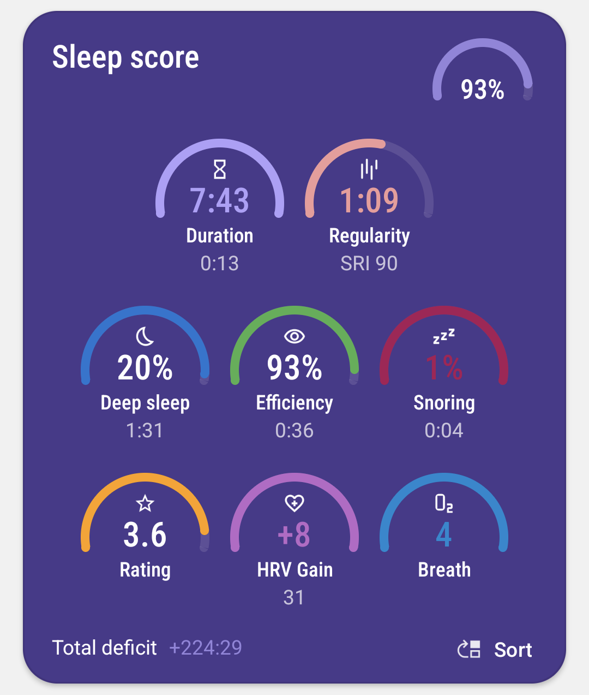
.Sleep score in Charts section
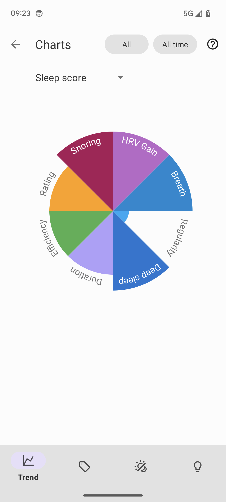
- //toc: []
Note: You can choose between colors matching your theme, or color-coding (each dimension has its own color across the whole app; Settings > Personalize > Stats > Color palette).
If you see you are consistently behind some target for any of your dimensions, you can setup goals. For instance you are sleeping just 6:00 on average which is quite bad for an adult, so you can setup a goal to increase your sleep duration to at least 6:30 and the app will guide you gradually to achieve that goal… The app will point out some notable trends and also suggest some changes in the Advice section.
Sleep score dimensions#
There are eight dimensions that contribute to sleep quality. Each of the dimensions has a healthy range and an unhealthy range. The app combines all dimensions into one “Sleep Score” for simplification.
[NOTE]
#
Healthy durations are adjusted according to your age as defined in Settings -> Stats -> Year of birth
- General or not set (6.5 - 9)
- School age (9 - 11)
- Teenager (8 - 10),
- Young (7 - 9)
- Elderly (6 - 9)
If you’re in the healthy range for a certain dimension, it lights up green and you get one point. Every line can also turn red if the values are in a very unfavourable range.#
Note: If you are missing some charts, it means you do not have the required sensor, or the app does not have enough data to estimate it. If your irregularity pie chart is missing, there are probably gaps in the graphs. You can consider Automatic tracking start or Sleep time estimation features, if you often forget to start the tracking.
Sleep Score#
[cols=“1,1”] |=== a|
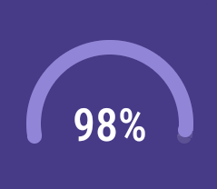
|Overall score combining all your other sleep metrics.|Figure |Percentage of the score (0,100).
|Healthy range |as close to 100% as possible |===
HRV Gain#
[cols=“1,1”] |=== a|
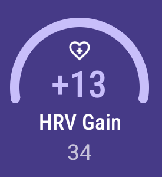
|The difference between your HRV measured during the first low activity period (hrv before) of your sleep and the HRV measure at the last low activity period before awake up (hrv after) (see details here).|Top Figure |Difference between hrv after and hrv before.
|Bottom Figure |HRV after (the last low activity period before awake up).
|Healthy range |over 2
|Unfavourable range |under -5
|===
Breath disturbances#
[cols=“1,1”] |=== a|
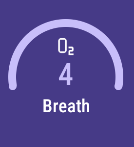
|Breathing disturbance episodes per hour, read more about this topic here and here.|Top Figure |Average breathing disturbance episodes per hour.
|Healthy range |under 10
|Unfavourable range |under over 20
|===
Regularity#
[cols=“1,1”] |=== a|
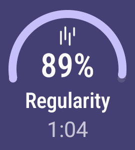
|How regular your sleep is. Sleep Regularity Index, SRI and Variance of your mid-sleep hour.|Top Figure |SRI, more details here
|Bottom Figure |Deviation of sleep duration and mid sleep hour
|Healthy range |Over 80 for SRI and under 0.5 hours for regularity
|Unfavourable range |Less then 60 for SRI, over 1 hour fpr mid sleep hour variance
|===
Deep Sleep#
[cols=“1,1”] |=== a|
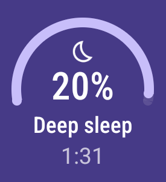
|How long you’ve been in deep sleep compared to the total sleep duration.|Top Figure |Average % of deep sleep
|Bottom Figure |Duration of deep sleep phases
|Healthy range |over 30%
|Unfavourable range |under 20%
|===
Duration#
[cols=“1,1”] |=== a|
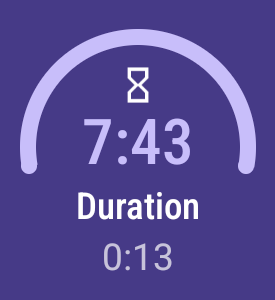
|How long have you been sleeping.|Top Figure |Total sum of all your sleep phases of the day.
|Bottom Figure |Deficit or surplus from your sleep daily goal.
|Healthy range |6.5 hours to 8.5 hours, see how this differs with age
|Unfavourable range |less than 6.5 hours, or more than 8.5 hours
|===
Efficiency#
[cols=“1,1”] |=== a|
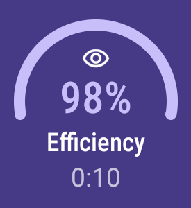
|How long you’ve been actually sleeping vs. being in bed.|Top Figure |Sleep/awake ratio in %
|Bottom Figure |Duration of awake periods
|Healthy range |over 95%
|Unfavourable range |under 85%
|===
Rating#
[cols=“1,1”] |=== a|
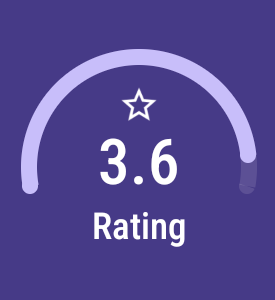
|Your average subjective rating.|Top Figure |Your rating
|Healthy range |over 3.5 stars
|Unfavourable range |under 2 stars
|===
Snoring#
[cols=“1,1”] |=== a|
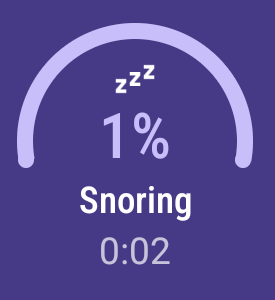
|How long you’ve been snoring compared to the total sleep duration.|Top Figure |Percentage of your snoring
|Bottom Figure |Total duration of snoring
|Healthy range |under 3%
|Unfavourable range |over 10%
|===